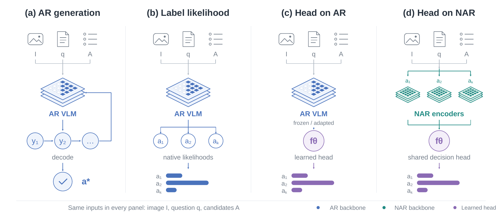
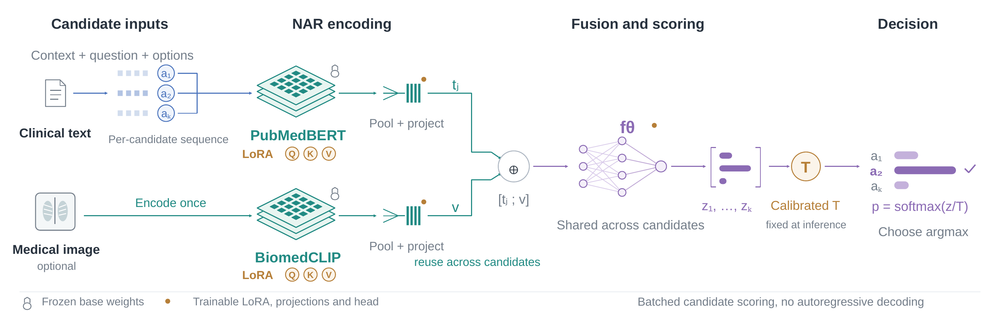
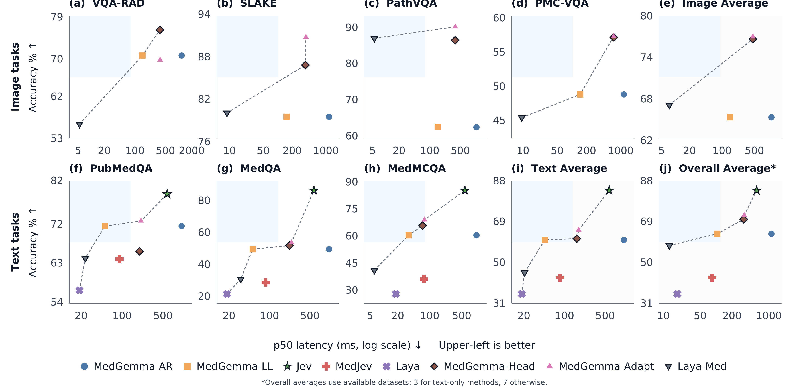
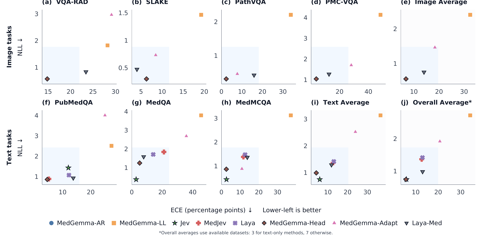
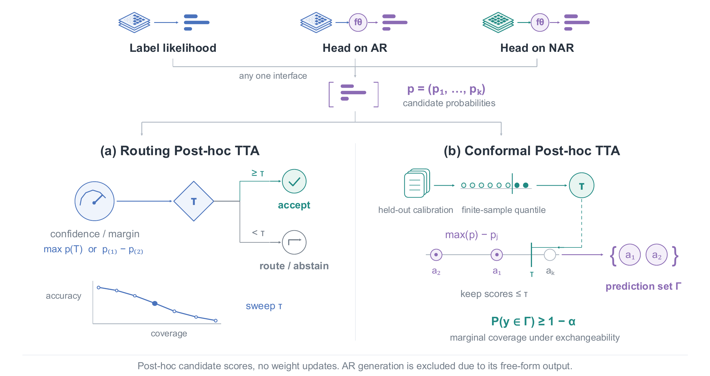
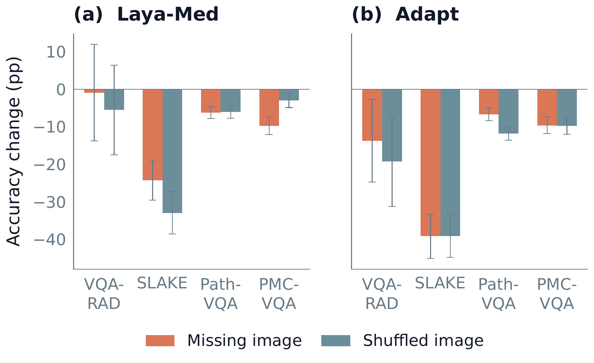

System One · direct medical decisions
How medical vision-language models reach a multiple-choice answer — five decision paths, from slow autoregressive writing to a single non-autoregressive scoring pass. Don't just read about it: play with each one and watch every decision it makes.
Playground
Each one replays the same five variants — but from a different angle. Every action shows the decision it made, how confident it was, and how long it took.
Step through held-out SLAKE and MedQA cases. Watch all five variants answer the same question — each prediction, confidence, and latency, plus a live decision stream.
Five snakes, one clock. Each moves at its variant's measured decision speed — and every move is logged in the decision stream with its confidence and latency.
A critical case lands and the treatment window is closing. All five paths race to make the right call before it shuts — each at its measured latency. Speed is the whole game.
Anaphylaxis: the airway is collapsing in real time. All five paths race to inject epinephrine before the door shuts — the fast paths get the shot in, the slow ones arrive to a code blue.
Ten patients alarm at once. Five triage teams race on throughput — each clears alarms at its measured latency. In a storm, the model that can't triage fast is useless, no matter how accurate.
Alarms slide toward the decision line — ACT for a true alarm, HOLD for a false one. Each model decides at its measured latency and accuracy, and a wrong or late call drains its stability bar.
A glucose trace scrolls and a dosing beat arrives — GIVE above target, HOLD in range. Over-dosing or missing a dose drains the stability bar, so both accuracy and speed decide who survives.
The comparison
Each path's measured mean decision latency and held-out accuracy, ranked by speed.
From the paper
Figures from the SysOne study.

AR generation, label likelihood, and learned heads on AR and NAR backbones — same inputs, different decision interfaces.

Text and image are encoded once, fused, and scored by a shared head — batched candidate scoring, no autoregressive decoding.

Held-out accuracy against p50 decision latency across image and text tasks. Upper-left is better.

ECE and NLL against latency. Lower-left is better — direct scoring stays calibrated without the generation cost.

Routing and conformal TTA over candidate scores — no weight updates, with a marginal coverage guarantee.

Accuracy change when the image is missing or shuffled — how much each path actually relies on the visual input.
Under the hood
Writes text — up to 32 tokens, or exactly one — then parses it into a choice.
A frozen backbone feeds a small head that scores every option at once.
Text and image are encoded, fused, and scored in a single forward pass.